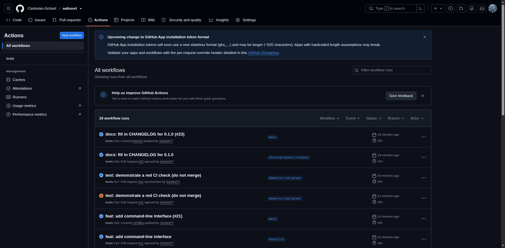

GitHub Actions: автоматически запускаем тесты
Один файл воркфлоу запускает тесты SafeSort автоматически при каждом изменении — без ручной проверки перед Pull Request.
Проверять тесты вручную перед каждым Pull Request легко забыть. GitHub Actions — сервис, который автоматически выполняет заданные действия при определённых событиях в репозитории, например при каждом пуше или открытии Pull Request. Для SafeSort такое действие — запуск тестов.

Вот тот самый файл-инструкция, который GitHub читает перед каждым запуском:
name: tests
on:
push:
branches: ["main"]
pull_request:
jobs:
test:
runs-on: ubuntu-latest
steps:
- name: Check out repository
uses: actions/checkout@v7
- name: Set up Python
uses: actions/setup-python@v7
with:
python-version: "3.14"
- name: Install SafeSort with dev dependencies
run: pip install -e ".[dev]"
- name: Run tests
run: pytest tests/
paths, ограничивающего запуск по изменённым файлам: в отдельном репозитории safesort любой пуш или Pull Request так или иначе касается самого пакета. Такое ограничение нужно только в общем репозитории курса, где SafeSort — лишь один из многих подкаталогов и незачем перезапускать его тесты из-за изменений где-то ещё.Управляемая проверка: специально сломанный тест
Полезно один раз увидеть, как выглядит красная (неудачная) проверка — и как её исправить, — прежде чем столкнуться с этим впервые в реальной ситуации. В истории запусков выше это тот самый красный кружок: временный коммит намеренно вернул регистрозависимое сравнение расширений в классификаторе (тот же дефект, что показан в разделе 23-23 как RED/GREEN пример), затем был отменён следующим же коммитом — main ни на секунду не оставался в сломанном состоянии.
main в сломанном состоянии. Реальная красная проверка на основной ветке означает, что кто-то другой, кто скачает код прямо сейчас, получит нерабочую версию.Коротко
- GitHub Actions запускает заданные действия автоматически — при пуше или открытии Pull Request.
- В отдельном репозитории воркфлоу запускается без ограничения по paths — любое изменение здесь так или иначе касается SafeSort.
- Специально сломанный и затем исправленный тест — быстрый способ научиться читать журнал проверки.